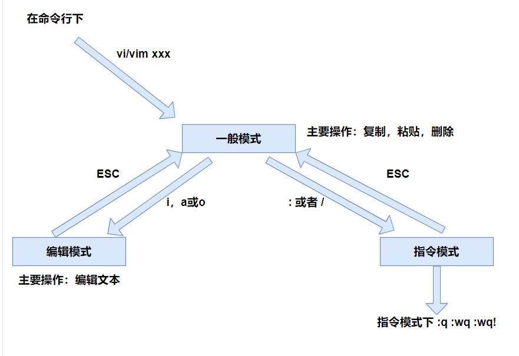

Linux基础-VI/VIM编辑器

文章目录
VIM 是 Linux 系统上一款文本编辑器，它是操作 Linux 的一款利器。 当前有很多优秀的 IDE 都支持安装 VIM 插件，原因就是使用它便捷，高效，很爽！
是什么
VI 是Unix 操作系统和类Unix 操作系统中最通用的文本编辑器。 VIM 编辑器是从VI 发展出来的一个性能更强大的文本编辑器。可以主动的以字体颜 色辨别语法的正确性，方便程序设计。VIM 与VI 编辑器完全兼容。
刚开始用 VIM 打开文件的时候，需要从宏观的去了解一下 VIM 这个编辑器。
VIM常用的三个模式：
- 一般模式（默认模式）
- 编辑模式
- 指令模式
模式间的转换

一般模式
以vim打开一个档案就直接进入一般模式了（这是默认的模式）。在这个模式中， 你可以使用上下左右按键来移动光标，你可以使用删除字符或删除整行来处理档案内容， 也可以使用复制、粘贴来处理你的文件数据
常用语法
| 语法 | 功能描述 |
|---|---|
| yy | 复制光标所在行 |
| y数字y | 复制光标（含）后多少行 |
| p | 粘贴 |
| 数字p | 粘贴 数字 次 |
| dd | 删除 |
| d数字d | 删除光标（含）后多少行 |
| x | 剪切一个字母，相当于Del |
| X | 剪切一个字母，相当于Backspace |
| yw | 复制一个单词 |
| dw | 删除一个单词 |
| shift+6（^） | 移动到行首 |
| Home | 移动到行首 |
| shift+4（$） | 移动到行尾 |
| End | 移动到行尾 |
| 1+shift+g | 移动到页首 |
| shift+g | 移动到页尾 |
| 数字 shift+g | 移动到目标行 |
编辑模式
在一般模式中可以进行删除、复制、粘贴等的动作，但是却无法编辑文件内容的！要 等到你按下i, I, o, O, a, A等任何一个字母之后才会进入编辑模式。 注意了！通常在Linux中，按下这些按键时，在画面的左下方会出现INSERT或 REPLACE的字样，此时才可以进行编辑。而如果要回到一般模式时， 则必须要按下Esc这个按键即可退出编辑模式。
进入编辑模式
| 按键 | 功能 |
|---|---|
| i | 当前光标前 |
| a | 当前光标后 |
| o | 当前光标行的下一行 |
| I | 光标所在行的行首 |
| A | 光标所在行的行尾 |
| O | 当前光标行的上一行 |
退出编辑模式
按ESC退出编辑模式，退出后为一般模式
指令模式
在一般模式当中，输入 **: / ? ** 3个中的任何一个按钮，会进入命令模式。
在这个模式当中， 可以提供你搜寻资料的动作，而读取、存盘、大量取代字符、离开vi 、显示行号等动作是在此模式中达成的！
常用命令
| 命令 | 功能 |
|---|---|
| :w | 保存 |
| :q | 退出 |
| :! | 强制执行 |
| :wq! | 强制保存退出 |
| /要查找的词 | n查找下一个，N查找上一个 |
| ?要查找的词 | n查找下一个，N查找上一个 |
| :set nu | 显示行号 |
| :ste nonu | 关闭行号 |
| :noh | 取消高亮显示 |
| :s/old/new | 替换当前行匹配到的第一个old为new |
| :s/old/new/g | 替换当前行匹配到的所有old为new |
| :%s/old/new | 替换每一行匹配到的第一个old为new |
| :%s/old/new/g | 替换文档中匹配到的所有old为new |
vi/vim键位图

文章作者 Pure3417
上次更新 2023-02-24